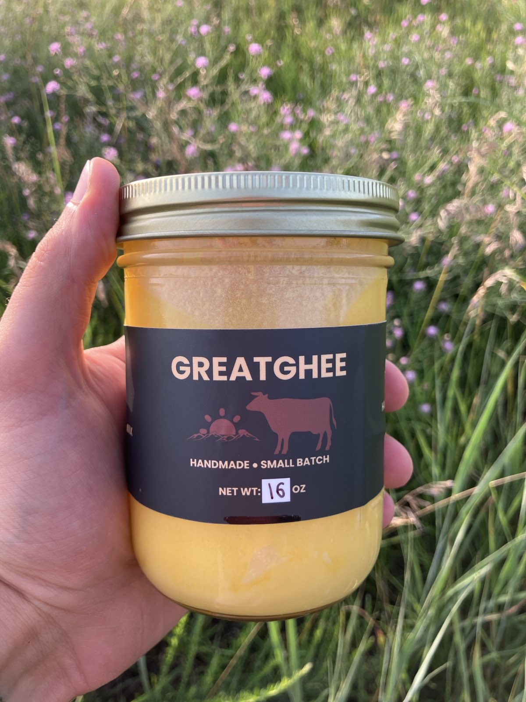

Our Products
Ready to experience GreatGhee? Choose from our premium sizes and pay seamlessly with Bitcoin via Zaprite.
16 oz Jar
Pure, grass-fed cow ghee in a convenient 16 oz jar—perfect for everyday use.
Buy Now (Bitcoin)What is Ghee?
Ghee, or clarified butter, is a staple in Ayurvedic traditions originating from India. It's made by simmering butter to remove water, milk solids, and impurities, leaving behind a golden, lactose-free oil with a nutty flavor and high smoke point (around 485°F/252°C). Unlike regular butter, ghee is shelf-stable and versatile for cooking, baking, or even skincare.
Our GreatGhee is sourced from grass-fed cows in Southwest Virginia, known for their rich, creamy milk high in beneficial fats.
Health Benefits of Grass-Fed, Pasture-Raised Cow Ghee
Grass-fed ghee from Southwest Virginia is a nutritional powerhouse. Derived from cows grazing on local pastures, it offers higher levels of essential nutrients compared to conventional alternatives. Here are some key benefits backed by nutritional science:
Rich in Vitamins
Packed with fat-soluble vitamins A, D, E, and K, which support eye health, immune function, bone strength, and skin vitality. Vitamin A, in particular, promotes healthy vision and glowing skin.
Digestive Support
Contains butyrate, a short-chain fatty acid that nourishes gut cells, reduces inflammation, and aids digestion. It can help alleviate issues like constipation and irritable bowel syndrome (IBS).
Heart-Healthy Fats
Provides conjugated linoleic acid (CLA) and omega-3s from grass-fed sources, which may support heart health, reduce bad cholesterol, and act as an anti-inflammatory agent.
Lactose-Free & Allergen-Friendly
Free from lactose and casein, making it suitable for those with dairy sensitivities. It's a clean energy source that sustains without digestive discomfort.
Antioxidant Boost
Loaded with antioxidants that combat oxidative stress, promote wound healing, and enhance collagen production for youthful skin and overall cellular health.
Weight Management Aid
Healthy saturated fats act as a filler food, curbing hunger pangs and providing sustained energy. Moderate intake can support metabolic health and weight control.
These benefits are amplified in grass-fed ghee from cows in Southwest Virginia, which produce milk with higher butterfat content and superior nutrient profiles. Always consult a healthcare professional for personalized advice.
Why Grass-Fed, Pasture-Raised Cow Ghee?
Cows in Southwest Virginia thrive on lush, natural pastures, producing milk richer in proteins, minerals, and beneficial fats than standard breeds. When grass-fed, these cows yield ghee with elevated levels of omega-3s, CLA, and vitamins, free from the residues of grain-fed farming. Our small-batch process ensures purity and potency, honoring sustainable local practices.
Pictures of GreatGhee Products
How We Make GreatGhee
Our ghee is handmade in small batches for unmatched quality:
- Sourcing: Fresh milk from grass-fed, pasture-raised Holstein and Holstein-Jersey cows in Southwest Virginia.
- Churning: Churn the milk into butter, separating the buttermilk from the butter.
- Clarifying: Slowly simmered to separate the milk whey/fat from the clarified butter, resulting in pure golden ghee.
- Bottling: Slowly set out to cool, filtered, and jarred.
No fillers. No gimmicks. No sketchy sourcing.